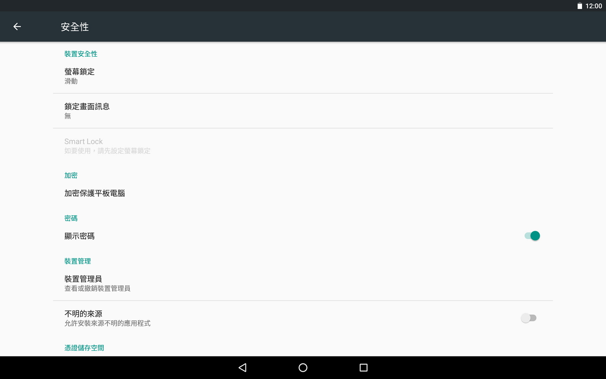

設定「安全性」
設定本機器的安全性。
| 螢幕安全性 | |
|---|---|
| 螢幕鎖定 | 可選擇鎖定螢幕的方法。 |
| 鎖定畫面訊息 | 輸入要顯示在鎖定畫面中的文字。 |
| Smart Lock | |
| 加密 | |
| 加密保護平板電腦 | 對本機器內的所有資料加密。一經加密後即無法復原。希望恢復成未加密狀態時，必須刪除所有資料與重設系統。 |
| 密碼 | |
| 顯示密碼 | 勾選後在鎖定畫面中輸入密碼時，將會顯示輸入的文字。 |
| 裝置管理 | |
| 裝置管理員 | 顯示裝置管理員。 |
| 不明的來源 | 勾選後將允許由 Google Play 商店以外的網頁或郵件等來源，安裝應用程式。為了保護本機器與個人資料，請限制僅能由 Google Play 等可靠來源安裝應用程式。 |
| 憑證儲存空間 | |
| 儲存空間類型 | 硬體備份 |
| 信任的憑證 | 顯示憑證資訊。點選憑證名稱後，將顯示詳細資訊。 |
| 從 SD 卡安裝 | 由透過 USB 連線的硬碟或 SD 記憶卡等來源，安裝憑證資訊或憑證。 |
| 清除憑證 | 由憑證儲存空間刪除所有憑證資訊與憑證。 |
| 進階 | |
| 信任的代理程式 | 管理 Smart Lock 等功能的可信任代理程式。 |
| 螢幕固定 | 開啟這項設定，即可讓裝置固定顯示目前的畫面。 |
| 可存取使用情形資料的應用程式 | 管理哪些應用程式可以存取裝置上的應用程式使用資料。 |